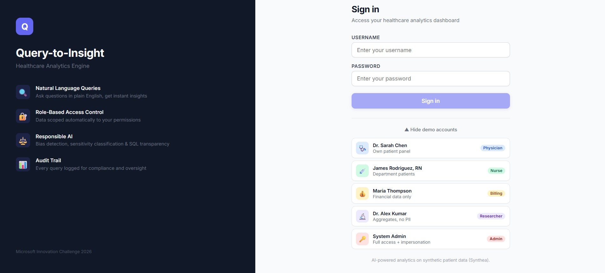

🏆 2nd Place Winner — Microsoft Innovation Challenge Hackathon (March 2026)
Traditional analytics workflows require writing SQL queries manually, which creates a barrier for non-technical users and slows down data-driven decision making. Analysts often spend significant time translating business questions into queries before generating insights.
My team and I built a full-stack analytics application that converts natural language questions into secure SQL queries and structured insights. The system allows users to interact with data using plain English, removing the need for manual SQL writing.